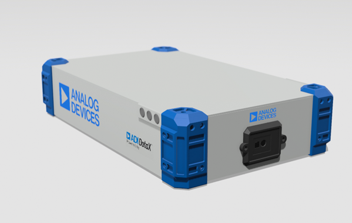

AD-R1M Robot Platform

The AD-R1M Open Mobile Robot Platform Reference Design is a modular, extensible, and fully open-source framework developed to accelerate the design, prototyping, and deployment of autonomous mobile robots.
This reference design integrates key hardware and software components, including motor control, sensor fusion, localization, navigation, and communication, into a cohesive platform that supports rapid development and experimentation.
Whether you’re building a research prototype, an educational robot, or a commercial-grade autonomous system, this platform provides the flexibility and scalability needed to meet diverse application requirements. It is designed to be compatible with popular development tools, middleware (such as ROS 2), and embedded systems, making it ideal for both academic and industrial use.
In this documentation
Tutorials
Get started with hands-on introductions for the AD-R1M
How-to guides
Step-by-step guides covering key operations and common tasks
Explanation
Discussion and clarification of key topics
Reference
Technical information: specifications, APIs, architecture
Applications showcase
SLAM

Navigation

Multi-robot fleet

Nvidia cuVSLAM

GMSL Camera integration and image processing
Floor segmentation

Object Detection

Features
Open-source hardware and software design
Support for ROS 2 Humble, Jazzy
Differential drive mobile base with encoder feedback
Support for NVIDIA Jetson AGX Orin for GPU-accelerated workloads
Gazebo simulation environment included
Components
Wide Dynamic Range, six axis IMU
Front-facing ToF camera
FOC motor drives
Robotics carrier for Raspberry Pi
3S Li-ion battery pack and BMS
Applications
Mobile robotics research and development
Autonomous navigation and SLAM algorithm development
Warehouse and logistics automation prototyping
Educational robotics platforms
Multi-robot setup management research
System Architecture
The AD-R1M platform consists of the following major subsystems:
Processing Unit: Raspberry Pi 5 (base) or NVIDIA Jetson AGX Orin (advanced)
Motion Control: Dual ADRD3161 motor driver boards with CAN interface
Power Management: ADRD5161 BMS board (3S or 12S battery variants)
Sensors: ADIS16470 IMU, ADTF3175D ToF camera, optional Intel RealSense
Connectivity: CAN bus, USB, Ethernet, Wi-Fi, CRSF radio
Repository
GitHub: ad-r1m-ros2
ROS2 Packages: See the package list
Help and Support
For questions and technical support, please visit the EngineerZone community forum.